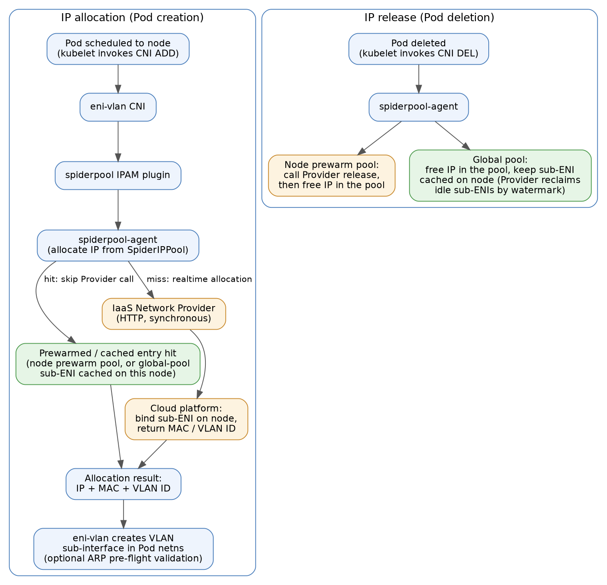

IaaS Network Provider
English | 简体中文
背景
在公有云或私有云环境中，Spiderpool 分配出的 IP 地址往往还需要在云网络系统中完成注册、绑定或转发面配置后，Pod 才能正常通信。为此，Spiderpool 支持对接通用的 IaaS Network Provider：一个实现 Spiderpool 通用 API 契约的 HTTP 服务，不绑定任何具体云厂商。Spiderpool 在分配或释放 Pod IP 时调用该 Provider，在云平台侧完成 sub-ENI 资源的绑定或解绑。
该模式支持 IPv4-only 和 IPv4/IPv6 双栈分配（双栈通过 ipam.spidernet.io/pair-pool 注解将 v4/v6 池配对，配对地址原子化绑定到同一个 sub-ENI），暂不支持 IPv6-only。
核心能力：
- 为 Pod 分配云端 sub-ENI：调用 Provider 在云平台创建/绑定 sub-ENI，并把云端下发的 MAC 地址、VLAN ID 通过 eni-vlan CNI 配置到 Pod 的 VLAN 子接口上；Pod 删除时同步释放云侧绑定。
- 两种池分配模式：节点预热池（Provider 按节点提前预热 IP 资源，Pod 秒级启动）与全局池（实时分配 + 粘性 sub-ENI 缓存），详见容器网络配置。
- 网络资源调度：按节点 sub-ENI 容量（如
spidernet.io/prewarm-sub-eni）和 master 物理网卡存在性（spidernet.io/<master>-nic）约束 Pod 调度，避免 Pod 被调度到无资源可用的节点。
关于池分配模式的内部机制、候选池类别排他、请求超时与时间预算、Provider API 契约等设计细节，参见 IaaS Network Provider 设计。
术语约定：
- ENI 指弹性网卡（Elastic Network Interface）
- Sub-ENI 指辅助弹性网卡（Secondary Elastic Network Interface）
- VLAN 指虚拟局域网（Virtual Local Area Network）。
工作流程

分配流程：
- Pod 调度到节点后，kubelet 发起 CNI ADD；eni-vlan CNI 调用 spiderpool IPAM 插件，向本节点的 spiderpool-agent 申请 IP。
- spiderpool-agent 从 SpiderIPPool 中选取地址：若命中预热/缓存条目（节点预热池中已就绪的地址，或全局池在该节点缓存的 sub-ENI），直接复用其 MAC/VLAN，跳过 Provider 调用；否则同步调用 Provider，在云平台侧绑定 sub-ENI 并取回 MAC 地址和 VLAN ID。
- IPAM 将 IP + MAC + VLAN 写入分配结果返回给 eni-vlan，由其在 Pod 网络命名空间中创建 VLAN 子接口（可选 ARP 预检校验）。
释放流程：Pod 删除时，节点预热池的地址会先调用 Provider 释放接口、成功后再释放池内 IP（先云侧后池内，避免云侧未接受释放前重新分配同一 IP）；全局池的地址只释放池内 IP，云侧 sub-ENI 保留在节点上作为缓存，由 Provider 按水位线回收空闲子网卡。
安装与配置
前置条件
- 先安装 IaaS Network Provider：Spiderpool 安装/升级时 Helm 会 lookup Provider 的 TLS Secret 并复制其中的
ca.crt，因此 Provider 必须先于 Spiderpool 安装。 - IaaS 侧准备：
- 创建 VPC 子网并绑定到节点弹性网卡。例如，将 VPC 子网
172.91.0.0/24绑定到节点的物理网卡eth1。后续创建的 SpiderIPPoolsubnet字段必须与该 VPC 子网一致。 - 确认每个节点可绑定的辅助 ENI 数量上限，用于设置资源广告的
defaultMaxCount。 - 建议节点的扩展弹性网卡不配置 IP 地址，避免回程路径不一致导致的通信问题。
-
节点规划：建议按用途给节点分组打 label，节点预热池和全局池分别使用不同的节点组，例如：
kubectl label node worker-1 worker-2 iaas-pool-mode=prewarm kubectl label node worker-3 worker-4 iaas-pool-mode=global该 label 既可用于资源广告规则的
nodeSelector，也可用于工作负载的nodeSelector，将节点池/全局池工作负载固定到对应节点组。 * 网卡名称统一：候选节点上父物理网卡（master）名称应尽量统一（如都为eth1）；如果无法统一，请启用 master NIC 网卡名称调度，避免工作负载被调度到不具备该网卡的节点。更多网络资源调度能力参见 Spiderpool Device Plugin。
安装 Spiderpool
准备 iaas-network-provider-values.yaml，一次性完成 Provider 对接、eni-vlan 插件安装和网络资源调度配置：
ipam:
enableGatewayDetection: false
enableIPConflictDetection: false
plugins:
installEniVlanCNI: true
iaasNetworkProvider:
service:
name: "iaas-network-provider"
namespace: "iaas-network-provider-system"
port: 8443
tls:
caSecret: "iaas-network-provider-tls"
httpRequestTimeout: "50s"
spiderpoolController:
podResourceInject:
enabled: true
spiderpoolAgent:
networkResourcePlugin:
enabled: true
kubeletRootDir: /var/lib/kubelet
resourceAdvertisement:
masterNIC:
rules:
- defaultMaxCount: 10000
includeInterfaces:
- "eth1"
nodeSelector:
matchExpressions:
- key: iaas-pool-mode
operator: In
values: ["prewarm", "global"]
subENI:
rules:
- resourceName: spidernet.io/prewarm-sub-eni
defaultMaxCount: 256
nodeSelector:
matchLabels:
iaas-pool-mode: prewarm
- resourceName: spidernet.io/global-sub-eni
defaultMaxCount: 256
nodeSelector:
matchLabels:
iaas-pool-mode: global
helm upgrade --install spiderpool spiderpool/spiderpool \
--namespace kube-system \
--values iaas-network-provider-values.yaml \
--wait
配置项说明：
iaasNetworkProvider.service：Provider 的 Kubernetes Service（name/namespace/port）。service.name为空时 Spiderpool 不会调用 Provider。连接采用单向 TLS：Helm 安装时 lookupservice.namespace下的iaasNetworkProvider.tls.caSecret，只复制其中的ca.crt到本地 Secretiaas-provider-ca。GitOps 或helm template场景（lookup 不可用）需显式设置iaasNetworkProvider.tls.ca（base64 PEM CA bundle），它优先于 lookup；insecureSkipVerify=true会跳过证书校验，仅作为灰度回退。Provider 被卸载重装（生成新 CA）后，需对 Spiderpool 重新执行helm upgrade刷新 CA 快照。iaasNetworkProvider.httpRequestTimeout：单次 Provider HTTP 调用（分配或释放）的超时时间，默认50s。取值约束和完整的时间预算模型参见请求超时与时间预算。plugins.installEniVlanCNI：必须为true（默认false），在每个节点上安装 eni-vlan CNI 插件。ipam.enableGatewayDetection/ipam.enableIPConflictDetection：必须关闭。此模式先调用 IPAM 获取 IaaS IP 信息、再由 CNI 完成 Pod 网络设置，与传统顺序相反，IPAM 阶段的网关可达性检测和 IP 冲突检测无法工作；连通性校验可改由 eni-vlan 在配置 Pod IP 前完成（见容器网络配置的validateIaasNetConfig）。spiderpoolAgent.networkResourcePlugin：启用 Spiderpool Device Plugin 资源广告。示例中的规则复用了前置条件里给节点打的iaas-pool-modelabel：subENI拆成两条规则，节点池组和全局池组分别上报**不同的资源名**（spidernet.io/prewarm-sub-eni和spidernet.io/global-sub-eni），使两种模式的工作负载在 resources 中声明各自的资源、互不挤占；masterNIC规则由两个节点组共用，上报spidernet.io/eth1-nic。其余节点不匹配任何规则、不受影响。subENI.rules[].defaultMaxCount是节点向调度器暴露的辅助 ENI 总容量，生产环境应按节点实际可用容量设置；masterNIC.rules[]按includeInterfaces/excludeInterfaces通配符选择要广告的物理网卡。字段详解和排障参见 Spiderpool Device Plugin。spiderpoolController.podResourceInject.enabled：webhook 为引用了 eni-vlan SpiderMultusConfig 的 Pod 自动注入spidernet.io/<master>-nic资源。sub-ENI 资源**不会**被自动注入，必须由用户在 Pod resources 中显式声明，否则调度器不会做 ENI 容量约束。
检查功能是否已启用
-
查看 ConfigMap：
如果输出中包含
iaasNetworkProvider.service.name且值非空，说明功能已启用。 -
查看 agent 启动日志：
kubectl logs spiderpool-agent-xxx -n kube-system | grep -E "IaaS client created successfully|IaaS provider configuration validation failed"看到
IaaS client created successfully说明 agent 已成功初始化 IaaS client；看到IaaS provider configuration validation failed则需检查iaasNetworkProvider.service和iaasNetworkProvider.tls配置。 -
查看节点资源广告：确认打了
iaas-pool-modelabel 的两个节点组分别上报了各自的 sub-ENI 资源和共用的 master 网卡资源：kubectl get nodes -o custom-columns='NAME:.metadata.name,POOL-MODE:.metadata.labels.iaas-pool-mode,PREWARM_SUB_ENI:.status.allocatable.spidernet\.io/prewarm-sub-eni,GLOBAL_SUB_ENI:.status.allocatable.spidernet\.io/global-sub-eni,MASTER_NIC:.status.allocatable.spidernet\.io/eth1-nic'示例输出（两节点测试集群，一个节点属于节点池组、一个属于全局池组）：
NAME POOL-MODE PREWARM_SUB_ENI GLOBAL_SUB_ENI MASTER_NIC worker-1 prewarm 256 <none> 10k worker-3 global <none> 256 10k每个节点只上报本组的 sub-ENI 资源。也可以直接查看 node 的
status.allocatable：kubectl get node worker-1 -o jsonpath='{.status.allocatable}' | jq 'with_entries(select(.key | startswith("spidernet")))'未打
iaas-pool-modelabel 的节点不匹配任何规则，对应资源显示<none>。这些 allocatable 资源就是后续 创建测试应用 时 Pod resources 中声明/注入的调度依据。
容器网络配置
SpiderIPPool 通过 ipam.spidernet.io/iaas-provider: "<vendor>" 注解标记为 IaaS 管理。<vendor> 为厂商标识，其取值对 Spiderpool 透明——只有注解的存在与否生效；mutating webhook 会自动同步一个同名 label，供 Provider 按 label selector watch 池对象。
IaaS 池有两种模式，由池的形态推导，且在池的生命周期内不可变（validating webhook 拒绝在已创建的 IaaS 池上增删 spec.nodeName）：
| 模式 | 形态 | 行为 | parent-nic 注解 |
|---|---|---|---|
| 节点预热池 | 设置 spec.nodeName（仅一个节点） |
Provider 提前在该节点预热 IP 资源，分配直接使用就绪地址，跳过同步 Provider 调用 | 必填 |
| 全局池 | 不设置 spec.nodeName |
实时分配 + 粘性 sub-ENI 缓存，服务跨多节点的工作负载 | 可选（缺省时从 SpiderMultusConfig 的 master 接口解析父网卡） |
ipam.spidernet.io/parent-nic 指定池的单个 guest-OS 父网卡名，池覆盖的所有节点上父网卡须同名。两类池可混用作为同一 Pod 网卡的候选池：预热池排序在前，全局池作为兜底；IaaS 池不可与普通静态池混用（详见候选池类别排他）。双栈场景需为 v4/v6 各建一个池并用 ipam.spidernet.io/pair-pool 注解互相配对。
每种池模式各配置一套「IP 池 + SpiderMultusConfig」：SpiderMultusConfig 使用 eni-vlan CNI 为 Pod 创建 VLAN 子接口，并通过 ippools 字段把对应模式的池声明为默认候选池，工作负载引用相应的网卡配置即可，无需逐个 Pod 指定池。
节点预热池配置
创建节点预热池
按节点创建，每个节点一个池：
apiVersion: spiderpool.spidernet.io/v2beta1
kind: SpiderIPPool
metadata:
name: worker-1-pool
annotations:
ipam.spidernet.io/iaas-provider: "<vendor>"
ipam.spidernet.io/parent-nic: eth1
spec:
ipVersion: 4
subnet: 172.91.0.0/24
gateway: 172.91.0.1
ips:
- 172.91.0.100-172.91.0.119
nodeName:
- worker-1
---
apiVersion: spiderpool.spidernet.io/v2beta1
kind: SpiderIPPool
metadata:
name: worker-2-pool
annotations:
ipam.spidernet.io/iaas-provider: "<vendor>"
ipam.spidernet.io/parent-nic: eth1
spec:
ipVersion: 4
subnet: 172.91.0.0/24
gateway: 172.91.0.1
ips:
- 172.91.0.120-172.91.0.139
nodeName:
- worker-2
创建后观察池的 status，确认预热完成：
status:
parentNic: # 池所在节点的 spiderpool-agent 解析并发布
name: eth1
mac: fa:16:3e:11:22:33
ipMetaData: # Provider 预热完成后写入
observedGeneration: 1
readyIPCount: 20 # 已预热就绪的地址数
unreadyIPCount: 0
metadata: '...' # 每个地址的 MAC/VLAN 元数据
totalIPCount: 20
allocatedIPCount: 0
readyIPCount 大于 0 即表示已经有 IP 预热完成；只有已就绪的地址才会被分配给 Pod。
配置节点预热池 SpiderMultusConfig
创建引用所有节点池的 eni-vlan SpiderMultusConfig：
apiVersion: spiderpool.spidernet.io/v2beta1
kind: SpiderMultusConfig
metadata:
name: iaas-prewarm-config
namespace: spiderpool
spec:
cniType: eni-vlan
enivlan:
master:
- eth1
ippools:
ipv4:
- worker-*-pool
validateIaasNetConfig: true
validationRetries: 3
validationTimeoutMs: 500
字段说明：
master：父物理网卡名称，必须与目标节点上的物理网卡一致，并与安装时masterNIC.rules[].includeInterfaces选中的网卡匹配（本例eth1）。ippools：默认候选池。节点池按节点逐一创建，推荐使用通配符（支持*、?、[]）一次匹配所有节点池——本例worker-*-pool覆盖worker-1-pool、worker-2-pool等，新增节点池无需修改 SpiderMultusConfig；IPAM 分配时会按 Pod 所在节点自动过滤出匹配的节点池。validateIaasNetConfig（默认false）：开启 ARP 预检校验。eni-vlan 在配置 Pod IP 之前，使用云端下发的真实 IP/MAC 通过 ARP 探测网关，校验 IP/VLAN/MAC 三元组的连通性，校验失败则 fail-closed，替代被关闭的 IPAM 阶段网关检测。validationRetries（默认3）/validationTimeoutMs（默认500）：预检校验的重试次数和单次超时（毫秒）。
eni-vlan CNI 没有
vlanID配置字段：VLAN ID 和 MAC 地址由 IaaS Network Provider 动态分配，并通过 spiderpool IPAM 插件在分配结果中下发。不要将社区静态vlanCNI 用于 IaaS 池：其静态vlanID语义与云端动态 VLAN 分配冲突，Spiderpool 会直接拒绝该组合。
全局池配置
创建全局池
同样带 iaas-provider 注解，但**不**设置 spec.nodeName：
apiVersion: spiderpool.spidernet.io/v2beta1
kind: SpiderIPPool
metadata:
name: app-global-pool
annotations:
ipam.spidernet.io/iaas-provider: "<vendor>"
ipam.spidernet.io/parent-nic: eth1
spec:
ipVersion: 4
subnet: 172.92.0.0/24
gateway: 172.92.0.1
ips:
- 172.92.0.100-172.92.0.200
全局池无需预热：首个落到某节点的 Pod 触发同步 Provider 调用创建/挂载 sub-ENI；Pod 删除后 sub-ENI 保留在节点上作为缓存，同节点后续 Pod 直接命中缓存。空闲 sub-ENI 的回收由 Provider 按水位线负责（回收保护机制见设计文档）。
配置全局池 SpiderMultusConfig
为全局池单独创建一个 SpiderMultusConfig，字段含义与节点预热池的配置相同，仅 ippools 直接引用全局池：
apiVersion: spiderpool.spidernet.io/v2beta1
kind: SpiderMultusConfig
metadata:
name: iaas-global-config
namespace: spiderpool
spec:
cniType: eni-vlan
enivlan:
master:
- eth1
ippools:
ipv4:
- app-global-pool
validateIaasNetConfig: true
validationRetries: 3
validationTimeoutMs: 500
创建测试应用
无论使用哪种池模式，工作负载都应在 resources 中显式声明本组的 sub-ENI 资源（节点池组 spidernet.io/prewarm-sub-eni、全局池组 spidernet.io/global-sub-eni），使调度器按节点 ENI 容量约束调度；spidernet.io/<master>-nic（本例 spidernet.io/eth1-nic）由 webhook 自动注入，无需声明。候选池已由各模式的 SpiderMultusConfig ippools 提供；如需为个别工作负载覆盖候选池，可使用 ipam.spidernet.io/ippool Pod 注解。
节点预热池模式
引用节点预热池的网卡配置 iaas-prewarm-config，并通过 nodeSelector 固定到预热节点组，Spiderpool 会按 Pod 所在节点自动过滤出匹配的节点池：
apiVersion: apps/v1
kind: Deployment
metadata:
name: prewarm-app
spec:
replicas: 2
selector:
matchLabels:
app: prewarm-app
template:
metadata:
labels:
app: prewarm-app
annotations:
k8s.v1.cni.cncf.io/networks: spiderpool/iaas-prewarm-config
spec:
nodeSelector:
iaas-pool-mode: prewarm
containers:
- name: demo
image: busybox:1.36
command: ["sh", "-c", "sleep 3600"]
resources:
requests:
spidernet.io/prewarm-sub-eni: "1"
limits:
spidernet.io/prewarm-sub-eni: "1"
验证：Pod 应秒级 Running（分配命中预热地址，不经过同步 Provider 调用），且 IP 来自 Pod 所在节点对应的池：
kubectl get pod -l app=prewarm-app -o wide
kubectl get spiderippool worker-1-pool worker-2-pool -o custom-columns='NAME:.metadata.name,ALLOCATED:.status.allocatedIPCount'
全局池模式
固定到全局节点组，引用全局池的网卡配置 iaas-global-config：
apiVersion: apps/v1
kind: Deployment
metadata:
name: global-app
spec:
replicas: 3
selector:
matchLabels:
app: global-app
template:
metadata:
labels:
app: global-app
annotations:
k8s.v1.cni.cncf.io/networks: spiderpool/iaas-global-config
spec:
nodeSelector:
iaas-pool-mode: global
containers:
- name: demo
image: busybox:1.36
command: ["sh", "-c", "sleep 3600"]
resources:
requests:
spidernet.io/global-sub-eni: "1"
limits:
spidernet.io/global-sub-eni: "1"
验证：分布在不同节点上的副本均从 app-global-pool 拿到 IP；删除并重建某个副本，若新 Pod 仍落在原节点，会命中该节点缓存的 sub-ENI 而快速启动：
kubectl get pod -l app=global-app -o wide
kubectl get spiderippool app-global-pool -o custom-columns='NAME:.metadata.name,ALLOCATED:.status.allocatedIPCount'
连通性与调度验证
-
网关连通性：在 Pod 内 ping 池的网关，确认云端下发的 IP/MAC/VLAN 配置正确、VLAN 子接口通信正常：
-
调度约束：确认用户声明的 sub-ENI 请求和 webhook 注入的母网卡资源均已生效：
预期输出同时包含
"spidernet.io/prewarm-sub-eni":"1"（全局池模式则为"spidernet.io/global-sub-eni":"1"）和"spidernet.io/eth1-nic":"1"。当请求总量超过节点容量时，超出的 Pod 保持Pending，Events 中出现FailedScheduling和Insufficient spidernet.io/prewarm-sub-eni（或global-sub-eni/eth1-nic）。 -
排障：
- Pod 未注入
<master>-nic：检查podResourceInject.enabled以及 Pod 是否引用了 eni-vlan SpiderMultusConfig。 - 节点 allocatable 无对应 sub-ENI 资源/
<master>-nic：检查networkResourcePlugin的规则、nodeSelector和includeInterfaces，并在目标节点执行ip link show确认master网卡存在。 - 分配失败：查看 spiderpool-agent 日志中的 Provider 调用错误；超时类错误的含义参见请求超时与时间预算。
异常场景处理
Spiderpool 会将以下情况视为失败：
- HTTP 请求失败。
- HTTP 响应状态码不是
2xx。 - 分配响应 JSON 无法解析。
- 分配响应中包含 Spiderpool 未请求的 IP。
当释放失败时，Spiderpool 可能根据触发释放的路径，在后续清理流程中进行重试。因此 Provider 的释放接口应支持幂等重试。
Provider 侧的实现要求（分配必须同步成功、释放幂等、释放最终一致、父网卡 MAC 缺失容忍）和完整的 API 契约，参见 IaaS Network Provider 设计。